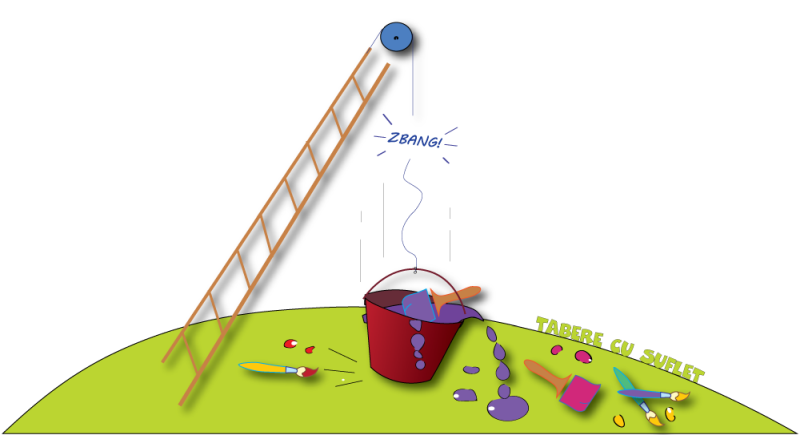

e este un broken link?
Un broken link (legatura întrerupta) reprezinta un hyperlink care indică spre o pagină sau o resursă care nu există. Cel mai adesea, aceasta a fost ștersa sau a fost mutata fără o redirecționare configurată corect.
Când un utilizator sau un robot (crawler) urmareste un link catre o astfel de pagina, serverul returnează un cod de stare 404 (Not found) sau 410 (Gone).
